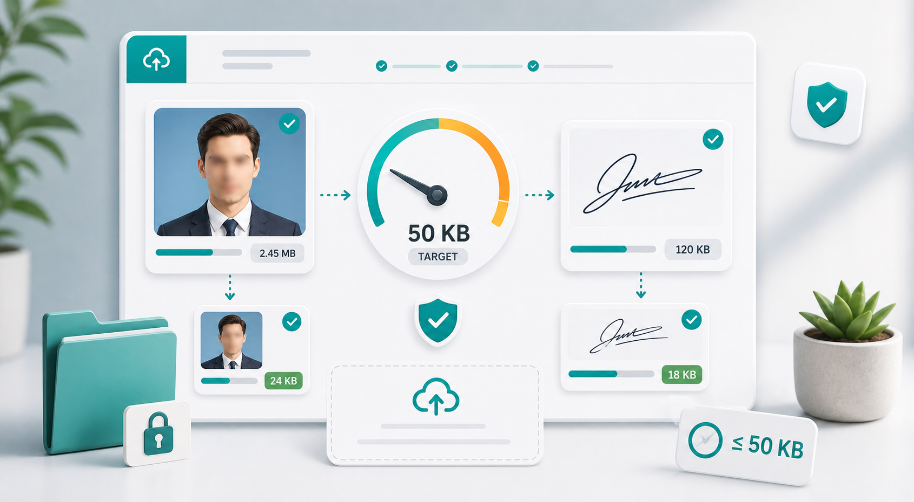

50KB images
Compress image to 50KB without ruining it.

A 50KB image limit is strict. You usually see it on older application forms, exam portals, ID systems, signature uploads, and profile-photo fields. A normal phone image is far too large for that limit, so you need to reduce both dimensions and quality. Compression alone is often not enough.
Before changing settings, check what the form actually asks for. Some portals require JPG. Others accept PNG for signatures. Some give exact dimensions, such as a small photo or signature box. If the form gives dimensions, follow those first. A file that is under 50KB but the wrong shape can still be rejected.
For profile photos, crop the face first. Remove empty space around the head and shoulders, but do not crop so tightly that the photo looks unnatural. Then resize to a smaller width, often somewhere between 400 and 800 pixels depending on the requirement. Start with JPG output and quality around 55 to 65 percent.
For signatures, crop close to the signature. A signature image usually has a lot of blank background. That empty space increases pixel count without adding useful detail. Crop the signature area, keep enough margin so it does not feel cut off, then compress. PNG may be required for clean lines, but JPG can work when the form accepts it and the background is plain.
If the file is still over 50KB, reduce the width in small steps. Dropping quality too far can make faces or text look rough. A smaller image at moderate quality often looks better than a larger image at very low quality. After each export, open the file and check the important detail at normal viewing size.
Use the free image compressor to try these settings quickly. If 50KB is too strict for your use case, the guide to compressing an image to 200KB gives a more forgiving workflow. For broader upload limits, see reduce image size in KB online.
Do not expect every image to look perfect at 50KB. A small headshot or signature can look fine. A detailed group photo, certificate scan, or product image may need more space. If the destination gives you a higher limit, use it. Compression should meet the requirement, not punish the image for no reason.
If you are working with a document or certificate, crop carefully and test readability. Sometimes converting a document to a cleaner scan or PDF is better than forcing a photo of the document into 50KB. If the website specifically asks for an image, make sure the text is still readable after compression.
For applicants, it helps to create a small set of reusable files: one photo under 50KB, one under 100KB, one signature under the required limit, and one clearer higher-quality photo. Many portals ask for similar documents, and having these versions ready can save time later.
When the final image is very small, preview it the way the reviewer will see it. A passport-style photo may only be displayed as a small square. A signature may appear inside a narrow form field. If it looks clear at the intended size, you do not need to worry about how it looks when zoomed far beyond normal use.
Keep the original image untouched. Once you make a 50KB copy, save it separately with a clear name like photo-50kb.jpg. That way you can create a better version later if another form asks for 100KB or 200KB instead.
Sources and further reading
- web.dev image performance explains why dimensions, file format, and compression affect image size.
- Google Image SEO best practices is useful when compressed images are used on public pages.